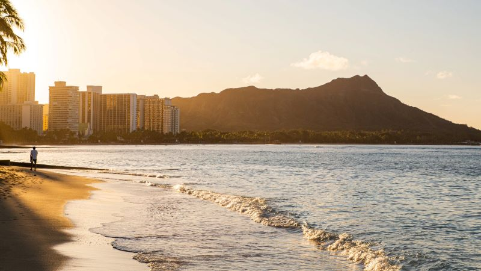
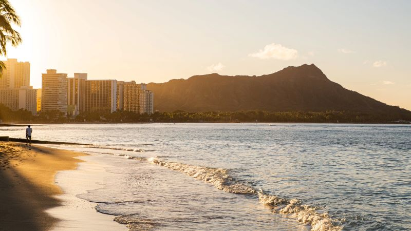

Waikiki Beach
Waikiki Beach is a beautiful place located on the island of Oahu in Hawaii. It is famous for its white sands, blue waters, and excellent surfing conditions.
Waikiki Beach is a beautiful place located on the island of Oahu in Hawaii. It is famous for its white sands, blue waters, and excellent surfing conditions.
